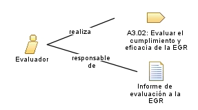

| Rol: Evaluador |
 |
|
Relaciones
 |
||
| Adicionalmente realiza | ||
|---|---|---|
| Modifica |
|
|
Descripción principal
| Persona experta responsable de llevar a cabo la evaluación de la EGR. Así como también de asesorar al comité de riesgos en la elaboración de la propuesta de mejora de la EGR. |